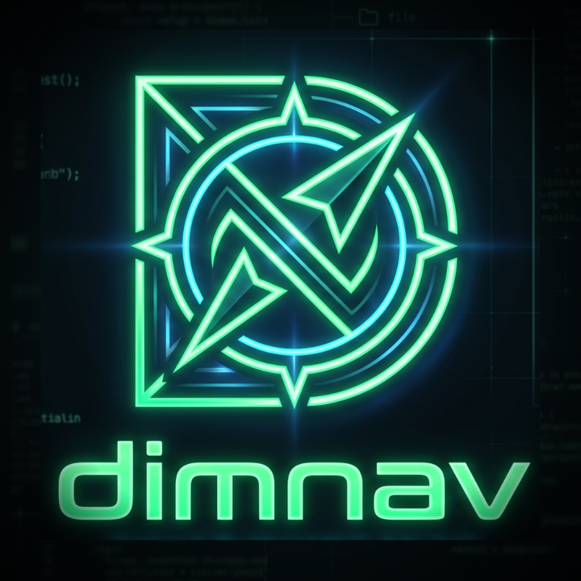

Two panels. No mouse.
A fast, keyboard-first file manager for macOS, in the Norton Commander lineage. Free and open source.
What it does
- Two panels Source and destination on screen at once. Each panel keeps its own columns, sort order, and hidden-file setting between launches.
- One key per operation Copy, move, rename, delete. Asynchronous, cancellable, with real progress and sane collision handling.
- Built-in terminal Command history, sharing the panel's working directory. No context switch to get a shell.
- Viewer and editor F3 and F4 open a file in place, including a hex mode. Large files stay responsive.
- Native, not a web page A Rust core with a thin rendering layer. Small download, quick launch, low memory.
- Permission handled properly When an operation needs privileges, macOS asks — the app never sees your password.
The keys that matter
| Tab | Switch panel |
| Enter / Backspace | Enter a directory / go up, landing on the folder you left |
| Space | Select |
| F3 / F4 | View / edit |
| F5 / F6 | Copy / move |
| F7 / F8 | New folder / delete |
| ⌘F / ⌘T | Quick search / terminal |
| F1 | Every other shortcut |
Open source
dimnav is MIT licensed and developed in the open. Read the source, file an issue, or send a patch on GitHub. If it saves you time, you can sponsor its development.